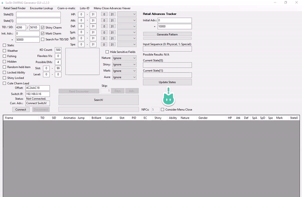

This guide will cover the process of RNG abusing item machines (Cram-o-Matic, Rotom Lottery) and NPCs (Watt Trader) in Sword/Shield, using the SWSH Overworld RNG Generator by LegoFigure11. Item RNG abuse is best utilized to help players obtain rare/valuable items such as rare Pokeballs.
From here this guide assumes you are using an unmodified Switch console.
Click here if you are using a Switch console running Atmosphere CFW!SWSH_OWRNG_Generator_GUI tracks the current RNG state and the number of advancements since connecting to the program. The RNG state advances naturally based on your location, the weather, and the number of NPCs present or active.
Different in-game actions can also be used to advance the RNG state with varying influence, the most useful actions can be found in the table directly below.
| Type of action | Description of action | Adv. influence |
|---|---|---|
| Player Movement | Moving the player using the control stick, then letting the control stick fall back into it's resting state. This Includes whistle and bike bell. |
1-3 Advancements per input. |
| Menu Close | Opening and closing the pause menu using the X button. |
Varying depending on location and environment, predictable (explained below). |
| NPC Activation | Standing near an NPC to make them notice the player. Moving away from an NPC will cause them to "deactivate". Useful for covering short distances quickly. |
~2500 advancements per minute. |
| Animations/Motions | Having your Pokémon animate on the summary screen or party menu by clicking in the L3 button, or by using the Skip feature. |
+1 advancement per animation on the individual Pokémon summary screen. +1 advancement per button input on the party summary screen. |
| Date Skipping | Using the date-skipping exploit to advance towards targets and reset time based events, this is the quickest way to advance frames. | Variable influence based on the amount of Pokémon stored inside boxes, up to 15,000~ per day skipped. |
This refers to an in-game feature on the Pokémon summary screen or party menu. Pressing L3 (pressing the left stick) will cause your Pokémon to perform one of 2 animations, these will be referred to as "physical" and "special" animations.
In the above image, we can see Espeon performing 2 different types of animation.
It is important to pick a Pokémon with a clear physical/special example. This can be anything you want, just make sure the animation difference is obvious to you.
The Retail Seed Finder sub-window is where players can calculate their current seed, this is done by recording a sequence of 128 motions/animations in a row.
Retail Seed Finder sub-window on SwSh OWRNG Generator GUI.Summary.L3 button to cause an animation, take note of if the animation was physical or special.(0) Physical button. If the animation was special, press the (1) Special button.Update Main Form button to paste it into the main window.Re-identifying your current seed is done using the Retail Advances Tracker feature of the Main Window, and is essentially a simplified version of finding your seed using animations.
Generate Pattern button after initially identifying your seed.Update States button to paste your current seed into the top-left of the main window.Recording animations through the Pokémon summary screen is recommended, this is due to the party menu advancing +1 per button clicked, the summary screen advances +1 per animation, making it easier to keep track of.
If your results are not desirable, you will need to reset the game and identify your current seeds again.
Figure 3 - Menu Close Advances Viewer window overview The Menu Close Advances Viewer sub window (pictured above), predicts the number of advancements from closing the pause menu. This advancement method is recommended as closing the pause menu freezes the RNG state for a few seconds, making it an extremely consistent method of hitting an exact target frame.
After entering your seeds and hitting search, a table will appear. The Jump column of the table displays the amount of advancements that will occur from closing the pause menu, this number varies based on the amount of NPCs in your area, so it is important to calibrate your NPC count when attempting to use menu close prediction.
Retail Seed Finder to identify your current seed, make sure to click Update Main Form button after doing so.Example - If a total of 15 advancements occured from seed re-identification, and only 8 advancements were consumed from animations, a total of 7 advancements occured from closing the pause menu.
Update States button, open the Menu Close Advances Viewer sub window, make sure the seeds inside the window match the top left of the main window.Jump column does not match, increase or decrease the number of NPCs by 1 until everything aligns properly with what is expected.Jump column, so we would gradually alter the NPC value until +7 appears to get the correct NPC count.We highly recommend becoming familiar with NPC count calibration before continuing with the guide. This method is used in almost all cases as it provides the most consistency.
With all the required reading out of the way, let's get into it! Click one of the below links to jump to the section that applies to you.
The goal is to interact with the Cram-o-matic on the calculated target frame given to us by the Cram-o-Matic window of SWSH_OWRNG_Generator_GUI. We will be using the advancement methods listed in the table above to hit the target frame.
In this example we will be aiming for a 5 Level Balls. You can be more specific with the filters if you wish, such as filtering for a specific rare items.
First, stand near the Cram-o-matic and pause the game, then begin recording animations to identify your current seed.
Figure 1 - Tool setup:
Awesome, everything looks good! We can see our current seeds on the Cram-o-matic tab and have our filters set properly, it's time to search for a target frame.

X button to pause the game.Cram-o-Matic tab, then set the filters & NPC count.If your results are not desirable, repeat the following:

We found a target frame! 5 Rare balls on advance 41 (after considering 21 NPCs with menu close). This will be the frame we close the pause menu and interact with the Cram-o-matic.
The generator displays the target on frame 41, you do not need to account for any delay. This means we will aim to interact with the Cram-o-matic on frame 41.
Earlier we calculated that there are 21 NPCs in the area, we need this information to accurately predict the amount of advancements that will occur from closing the pause menu.
A press.X button, then re-identify your current seed again.menu close & amimation advancements as they advance in small increments, making them easy to keep track of.
Cram-o-matic window, paste your seeds into the correct fields, then enter your target frame into the + field.NPCs field, then click search to find your new target frame.Tip - If you are unable to find your target frame in the search results, this means the target cannot be hit using menu close predition based on your seed.
Use animations to advance the RNG state slightly, then change the number in the Init Adv. field accordingly and search again, do this until your target frame is visible.
Cram-o-Matic window prediction.You can be creative with the methods you use to advance the RNG state. Menu close prediction is not necessary but will make for a much easier time hitting target frames and is extremely helpful in areas of the game where the RNG advances at a quick pace.

The result matches the output of the generator, mission accomplished! We got 5 Level Balls from the Cram-o-matic on our first attempt!
That's all there is to RNG abusing the Cram-o-matic on retail hardware!
The goal is to interact with the Rotom PC in any Pokecenter on the calculated target frame given to us by the Loto-ID tab of the generator. We will be using the advancement methods listed at the top of the page and using menu close prediction to hit the target frame.
In this example we will be aiming for a Master Ball. You can be more specific with the filters if you wish, such as filtering for a specific rare item.
Figure 1 - Tool setup:Awesome, everything looks good! We can see our current seeds on the Loto-ID tab and have our filters set properly, it's time to search for a target frame.

X button to pause the game.Loto-ID tab, then set the filters & NPC count.If your results are not desirable, repeat the following:
We found a target frame! A Master Ball on advance x. This will be the frame we close the pause menu and interact with the Rotom PC in the Pokecenter.
The generator displays the target on frame 52, you do not need to account for any delay. This means we will aim to interact with the PC on frame 52.
Earlier we calculated that there are 7 NPCs in the area, we need this information to accurately predict the amount of advancements that will occur from closing the pause menu.
A press.X button, then re-identify your current seed again.menu close & amimation advancements as they advance in small increments, making them easy to keep track of.
Loto-ID window, paste your seeds into the correct fields, then enter your target frame into the + field.NPCs field, then click search to find your new target frame.Tip - If you are unable to find your target frame in the search results, this means the target cannot be hit using menu close predition based on your seed.
Use animations to advance the RNG state slightly, then change the number in the Init Adv. field accordingly and search again, do this until your target frame is visible.
Loto-ID window prediction.You can be creative with the methods you use to advance the RNG state. Menu close prediction is not necessary but will make for a much easier time hitting target frames and is extremely helpful in areas of the game where the RNG advances at a quick pace.

The result matches the output of the generator, mission accomplished!
That's all there is to RNG abusing the PC lottery function on retail hardware!